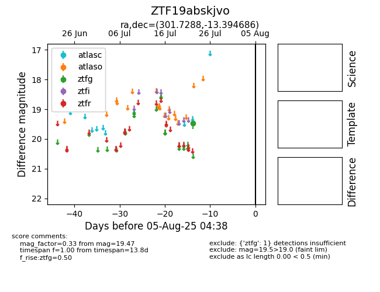

Target ZTF19abskjvo at 2025-08-05 23:02, see:
FINK: fink-portal.org/ZTF19abskjvo
Lasair: lasair-ztf.lsst.ac.uk/objects/ZTF19abskjvo
ALeRCE: alerce.online/object/ZTF19abskjvo
alt names
ZTF19abskjvo (ztf,fink)
coordinates:
equatorial (ra, dec) = (301.7288,-13.39469)
galactic (l, b) = (29.0345,-22.68314)
photometry
last ztfg=19.47
1 ztfg detections
